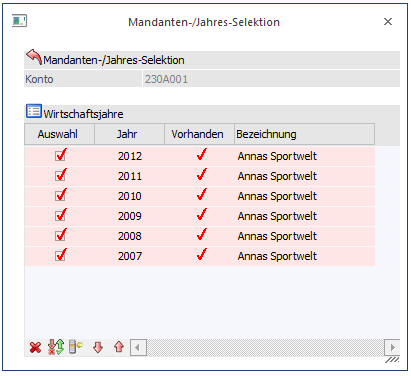
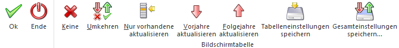

Über die FIBU-Applikationsparameter (Programm WinLine START, Menüpunkt Parameter/Applikations-Parameter) kann eingestellt werden, ob neu angelegte bzw. geänderte Konten in Vor- oder Folgewirtschaftsjahre übernommen werden sollen. Diese Übernahme kann entweder automatisch oder manuell erfolgen. Wenn die Übernahme manuell erfolgen soll, so wird beim Speichern des Kontos das Fenster "Konto aktualisieren" geöffnet, wo die Wirtschaftsjahre ausgewählt werden können, auf die Änderungen bzw. das neue Konto "kopiert" werden sollen.

Funktionen
Im oberen Bereich unter Konto werden die Kontonummer und die Kontobezeichnung (Kontoname) angezeigt, die gerade gespeichert wurde.
Im Bereich "Wirtschaftsjahre" können nun die Wirtschaftsjahre ausgewählt werden, auf die die Änderungen übernommen werden sollen. In der Tabelle werden die vorhandenen Wirtschaftsjahre des Mandanten angezeigt, wobei in der Spalte "Vorhanden" angezeigt wird, ob das entsprechende Konto in diesem WJ bereits angelegt war - in der Spalte Bezeichnung wird dann der Kontenname angezeigt, unter dem das Konto angelegt ist.
Ø Auswahl
Über diese Option kann gesteuert werden, ob die Änderung in das entsprechende Wirtschaftsjahr übernommen werden soll.
Über die Buttons unterhalb der Tabelle kann die Selektion der Wirtschaftsjahre beeinflusst werden:
Tabellenbuttons

Ø Ok
Durch Anklicken des OK-Buttons bzw. durch Drücken der F5-Taste werden die Änderungen gemäß den Einstellungen auf die einzelnen Wirtschaftsjahre verteilt.
Ø Ende
Durch Drücken der ESC-Taste wird das Fenster geschlossen.
Ø Keine
Wird dieser Button angeklickt, dann werden alle Wirtschaftsjahre deselektiert, d.h. die Änderung würde in kein Wirtschaftsjahr übernommen werden.
Ø Umkehren
Durch Anklicken des Umkehr-Buttons wird die Selektion ins Gegenteil verkehrt: alle aktiven Checkboxen werden inaktiv gesetzt und alle inaktiven Checkboxen werden aktiv gesetzt.
Ø Nur vorhandene aktualisieren
Wenn dieser Button angeklickt wird, dann werden nur die Wirtschaftsjahre aktualisiert, in denen das Konto bereits vorhanden ist.
Ø Vorjahre aktualisieren
Wenn dieser Button angeklickt wird, dann werden nur die Wirtschaftsjahre ausgewählt, die vor dem aktuellen Wirtschaftsjahr liegen - die Änderung wird nicht in nachfolgende Wirtschaftsjahre übernommen.
Ø Folgejahre aktualisieren
Wenn dieser Button angeklickt wird, dann werden nur die nachfolgenden Wirtschaftsjahre ausgewählt.
Ø Tabelleneinstellungen speichern
Die Spalten einer Tabelle können grundsätzlich an beliebige Positionen verschoben, bzw. in der Breite entsprechend angepasst werden. Durch Anwahl des Buttons "Tabelleneinstellungen speichern" werden die Einstellungen benutzerspezifisch gespeichert und bei dem nächsten Aufruf des Programmpunktes wieder vorgeschlagen.
Ø Gesamteinstellungen speichern
Im Gegensatz zu "Tabelleneinstellungen speichern" können mit "Gesamteinstellungen speichern" mehrere Tabellenaufbauten gespeichert und nach Wunsch geladen werden. Zusätzlich werden Sonderfunktionen der Tabelle (z.B. "Spalte gruppieren") ebenfalls bei der Speicherung bedacht.